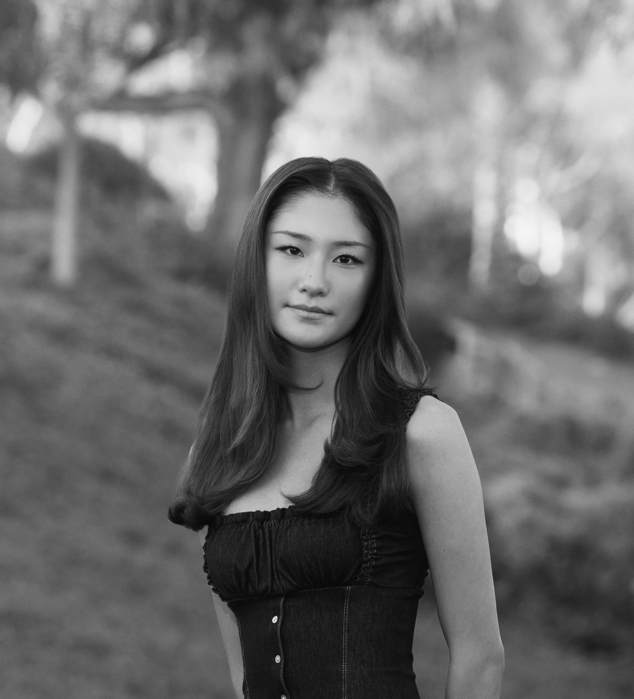

hi, welcome to my page :)
cs + computational & applied math
@ uchicago '30
works
- Pieta AI — poem analyzer & sentiment classifier (aug 2026): built and deployed a full-stack web app (Next.js, React, Vercel, Supabase) that interprets poems with an LLM API and classifies their sentiment. fine-tuned a BERT encoder on 6k+ texts for a 4-class task (no impact / positive / negative / mixed) with Hugging Face's Trainer API, built the evaluation pipeline with custom metrics (~86% accuracy, 0.71 F1), and fine-tuned a second model with LoRA.
- fraud detector on an imbalanced dataset (jul 2026): built a 3-layer PyTorch neural network to detect fraud across ~284,800 transactions, only 0.17% of them fraudulent. engineered features with Pandas/NumPy, trained with BCEWithLogitsLoss and Adam, and evaluated with precision-recall curves instead of accuracy, reaching 80% precision and 75% recall on the fraud class.
- Netflix user activity analysis (jul 2026): cleaned a multi-file dataset with missing values, misaligned indices, and duplicate entries using Pandas, then engineered features for a binary classification model predicting user churn.
previously
- awards: united states academic decathlon individual competition two-time national champion; john locke global essay finalist (econ category); national latin exam golds & silvers
- internships: climate change research @ both nasa's gsfc and the smithsonian institution NESST summer internships
- hs highlights: salutatorian, cum laude society junior inductee, admission ambassador, model un club prez
- certifications: machine learning specialization & pytorch for deep learning (deeplearning.ai), data analysis with python (freecodecamp)
about
- based in: corona del mar, CA
- two dogs: yasu (yorkie) and bruiser (shih-tzu)
- i love: traveling, pilates, nyt crosswords, and beach bonfires
- my game recs: balatro, stardew valley, stray, reigns, and any indie game
- skills: pytorch, tf, pandas, matplotlib, numpy, seaborn, css, html, sql
- currently learning: the deeper theory & math behind llms